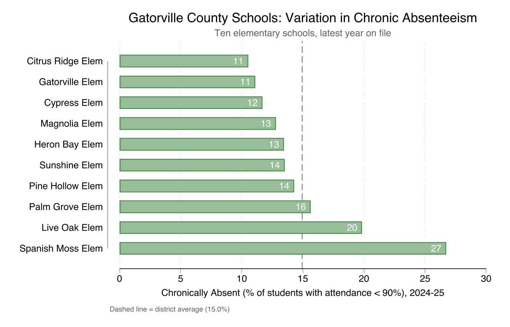

Take about 90 seconds each. Cover:

Discussion
Quantitative data are often, at their core, the result of counting. That counting gives us useful information about what is or isn’t happening in schools, but it definitely doesn’t tell us everything.
What quantitative data can tell us
What quantitative data cannot tell us
Course goals
1 Build a foundation for working with quantitative data in educational settings.
2 Develop a skill set for academic quantitative research you could use in your dissertation.
.do fileThree interim drafts, written feedback on each:
Tool
Stata
UFApps version available, no license needed.
We will get it open and a file loaded today.
Datasets
Weekly cadence
Any questions on the syllabus before we move on?
Part 3 of 5
Sources and access
Public
No special permission needed.
Restricted-use
Individual-level, some identifiable. Partnership and approval required for research.
FERPA (Family Educational Rights and Privacy Act) governs what schools can disclose about student records. The default rule is consent. The interesting parts are the exceptions.
Four exceptions worth knowing
Additional FERPA resources are linked in the Module 1 supplemental section in Canvas.
Looking ahead to your dissertation
The clearest path to approval is when researcher and district leadership are aligned on a question. Ask if your superintendent or other school leaders have particular challenges or questions that could be answered using district data. If you are interested in using administrative data for your dissertation, start building that relationship now.
We will think more about how to translate problems of practice into research questions in Module 3.
For this course we use simulated data from Gatorville County Schools (GCS), a fictional Florida district designed to look like the real thing.
Calibrated to match Florida district averages on demographics, attendance, and achievement. However, there are no real students and no privacy concerns.
A note: this is the first semester we are using this simulated dataset. It may be updated and re-uploaded at some point during the term. I will let you know via Canvas announcement if you need to download a new version. Thank you in advance for your flexibility.
Break time
Look for GCS_files.zip in this week’s Canvas module.
What is inside GCS_files.zip:
Before Module 2
Review all four files ahead of Module 2 (drops Tuesday May 19).
These are representative of the kinds of questions you can answer with quantitative education data, drawn from real district priorities. The modules where each is taken up are noted on the right.
We are not answering any formal research questions today. We are just going to get familiar with the mechanics of working in Stata.
Why are we doing this?
Statistical software like Stata lets us perform analyses and document them in a way that is replicable. That is a key feature of academic research, distinct from, for example, generating figures in Excel. It leaves a paper trail.
describe, summarize, tabulate, histogram)
There will be several Stata assignments throughout the semester with many opportunities to practice. Working with Stata over UFApps can be frustrating; my goal today is to give us plenty of time to troubleshoot together.
Module 2: The Quantitative Education Data Landscape
Asynchronous video lecture. Builds the formal vocabulary for what we worked with today: types of quantitative education data, units of analysis, data structures, and where data comes from.
This week:
Office hours: Tuesdays 1:00 to 4:00 PM. Calendly link and Zoom link in Canvas.